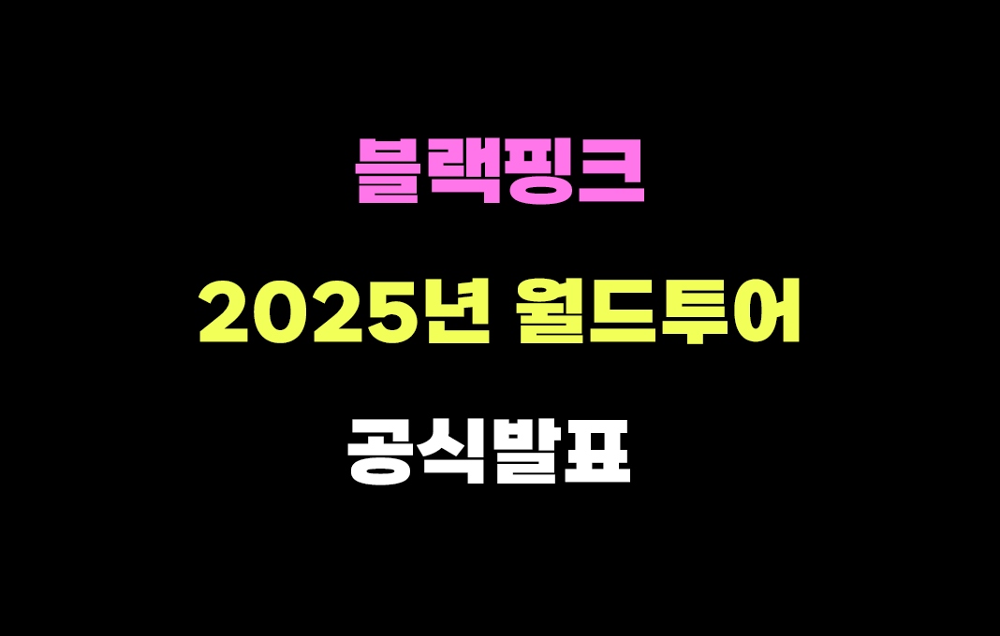
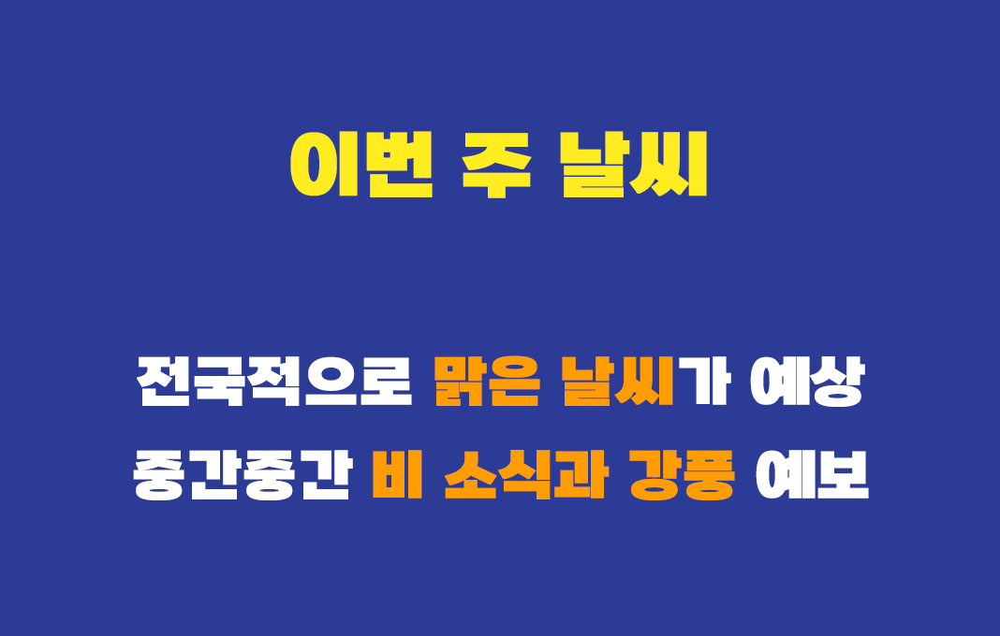

핫라이트
홈
핫이슈
SNS트렌드
연예
날씨
운세
🔥 핫이슈
긴급 속보! "우유는 공주" 너무 귀여워
테스트잇 새로운 에니어그램 테스트 선보여 화제
🎤 연예 뉴스

블랙핑크 2025년 월드투어 공식발표
🎬 화제의 드라마, 우유는 즐거워 시청률 1위 달성!
📢 SNS 트렌드
칠 가이: SNS 대세 신조어..대체 뭐길래?
📸 추워서 산책 못간 우유 강아지 화제
🌤️ 오늘의 날씨

서울 아침 체감온도 영하 -20도까지 내려갈 것으로 예상
🌧️ 주말 비 소식, 기온 급락 주의!
🌬️ 강풍 주의! 일부 지역 돌풍 발생 가능
✨ 별자리 운세
✨ 별자리 운세 보러가기